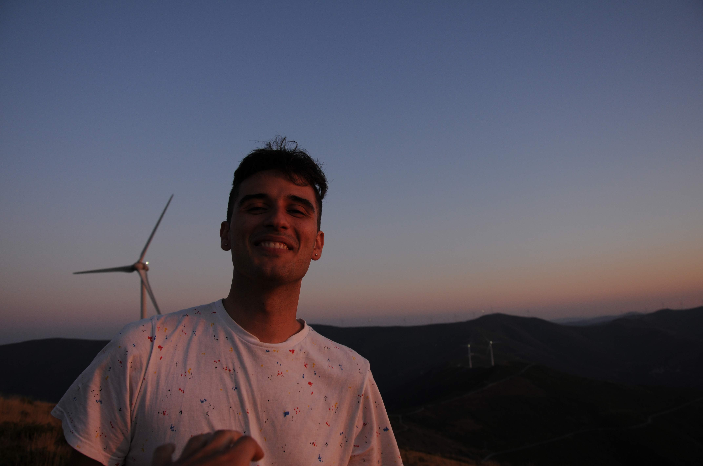
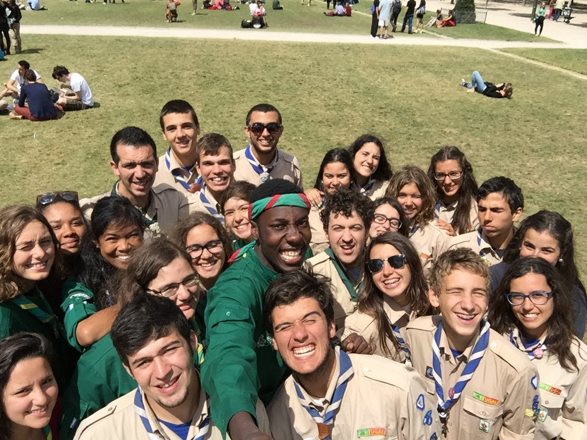

I was born in Coimbra, Portugal, in 1999. I've always had diverse interests ranging from history, philosophy, electronics, and photography to playing the guitar. In my teenage years, I actively participated in different community initiatives like scouts and local volunteer associations. Although I initially struggled with math, my high school years sparked an interest in this subject and eventually became a top math student, discovering a passion for physics and programming as well. For these reasons, in 2018, I enrolled at the University of Coimbra to study physics engineering and by 2023, I completed my masters in physics engineering, following a brief period in Austria, where I wrote my thesis about micromagnetic simulations and MEMS.

Throughout my life, I was involved in different community work initiatives and early on, I realized how crucial teamwork is in many life situations. I used community work as a learning exercise about myself in order to understand who I want to be, who am I and what personality traits I need to improve.
Scouts Moviment
1086 Palheira - 2006/2015
603 Antanhol - 2020/2022
I joined the scouts movement when I was 6 years old. As a young scout, I learned to follow moral values inspired by heroes in movies. As a scout grows older, the responsibility increases, meaning we prepare camps: where to sleep, buy food or take care of the younger scouts and we also organize events to fund our activities. This movement taught me important skills like communication in tough situations, leadership and accounting, as well as pioneering construction and orientation in unknown places with maps and compasses. I participated in regional, national and international activities, allowing me to meet scouts from other countries. In the end, the most rewarding aspect of being a scout was helping our local community.

Youth Group S.Pedro
Palheira, Coimbra - 2016/2023
The Palheira's Youth Group of S.Pedro, originally a religious gathering, feels more like a close-knit friend circle to me, especially since I'm not religious. In our small village, Palheira, we worked on three movies together, winning a prize in a national contest. I enhanced my skills in video editing and social activities by writing for the local newspaper, making music for festivals, and assisting in organizing village events, like the summer festivity.
Volunteering work
I took part in various food gatherings for Banco Alimentar.
At a Scout’s International Camp in France, following a natural catastrophe, I volunteered to deliver food, water and blankets for many scouts groups who lost their tents, food and clothing. For this reason, I was awarded with a diploma of distinction by my scouts high board.
During the Covid-19 pandemic, to prevent and protect professionals from contracting the virus, I joined a group, at my university, that assembled visors and delivered them to medical institutions free of charge.